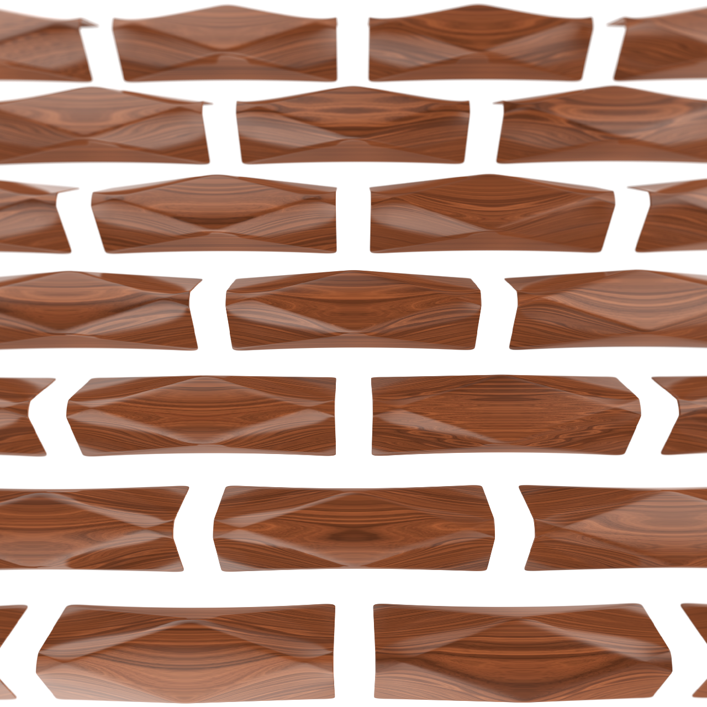
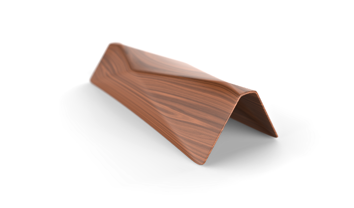

The final shape of this bench is defined by the digitalised edges of a simple paper folding experiment.

The starchy surfaces give distinct, yet soft characteristic to this conceptual furniture, made of CNC milled wood.
© 2008 – 2017 peter varo